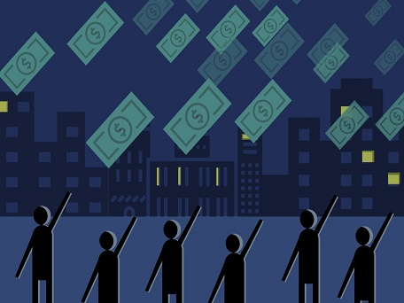
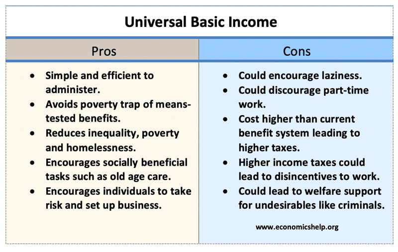

UBI Dreams
 UBI is a social program where each resident gets a payment (weekly, biweekly, or monthly) regardless of whether or not they are working. Some programs specify which individuals get payments while others express that all residents are eligible without taking into account their income, still others may just offer it to the individuals who fall below the poverty line.
Andrew Yang is a former presidential election candidate in the democartic primaries. He proposed during his run the Freedom Dividend. This type of fundamental salary that he is proposing for the US would guarantee installments of $1,000 every month, or $12,000 every year, to all U.S. residents 18 years or older. You and everybody you know would get $1,000/month consistently from the U.S. government, no inquiries asked. He even ran tests where he gave families cash month to month which greatly helped those families to show the great effect UBI would have if implemented nationwide.
The United States, Canada, Brazil, Finland, Germany, the Netherlands, Iran, Kenya, Namibia, India, China have all tried some form of UBI in their countries with varying success. Iran has the most permanent form of UBI. 29 percent of the median household income on average was given to Iranian citizens via UBI in 2011 but this was reduced later.
Alaska was positioned 30 out of 50 states on salary disparity; by 2015, the state had bounced to number two. UBI diminishes neediness and salary disparity, and improves wellbeing. The assurance of UBI shields individuals from slow compensation development, low wages, and the absence of employer stability brought about by the impacts of the developing "gig" economy, for example, Uber/Lyft driving, short term contract agreements, and expanded automation in the workplace. UBI permits working parents to decrease their working hours so as to invest more energy with their kids or help with chores.
"COVID could make UBI more acceptable and maybe someday permanent. COVID-19 has created a rare policy window where so many people are now tangibly feeling the economic insecurity we've been talking about."
- Sukhi Sharma, Director,
Stockton Economic Empowerment Demonstration